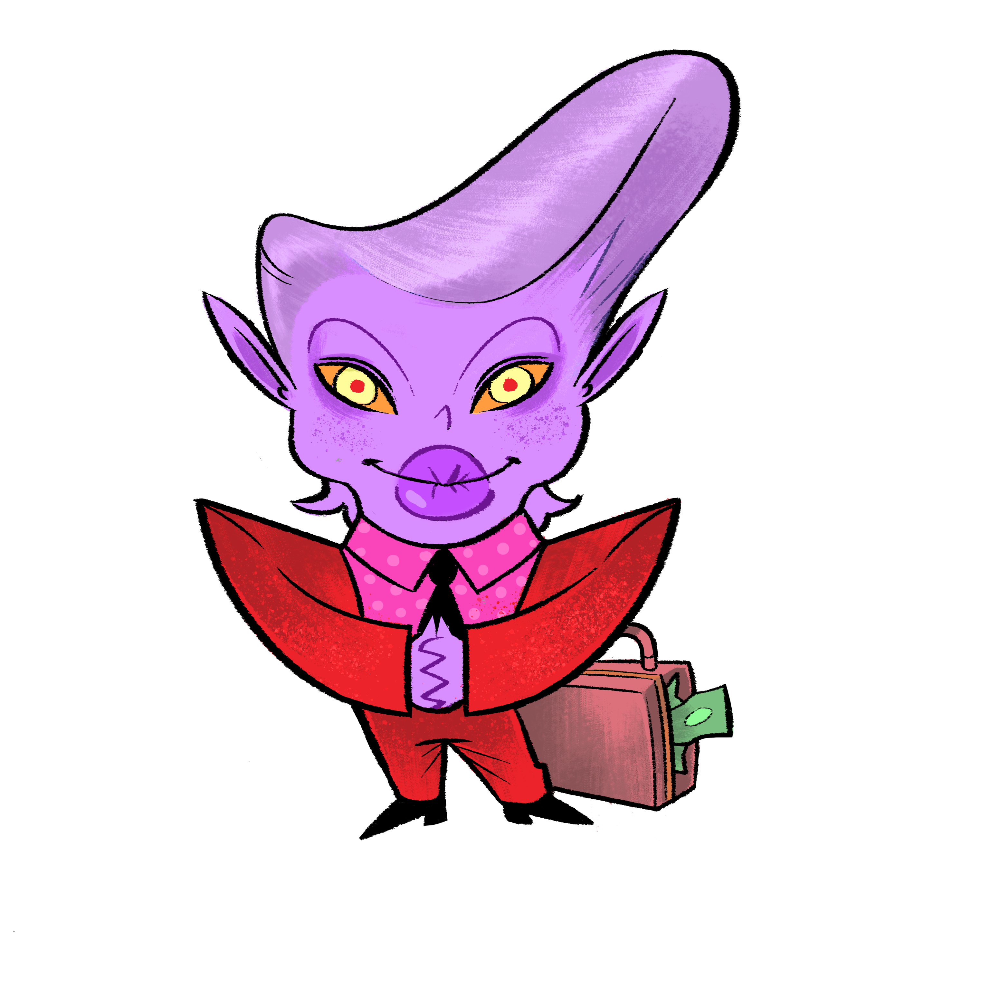
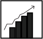
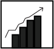
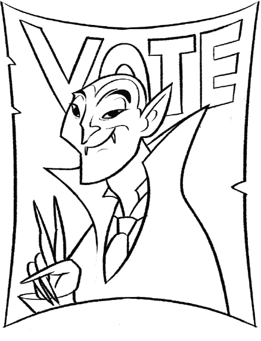
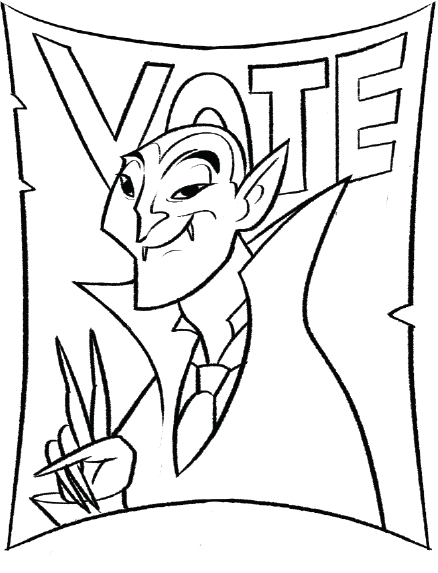
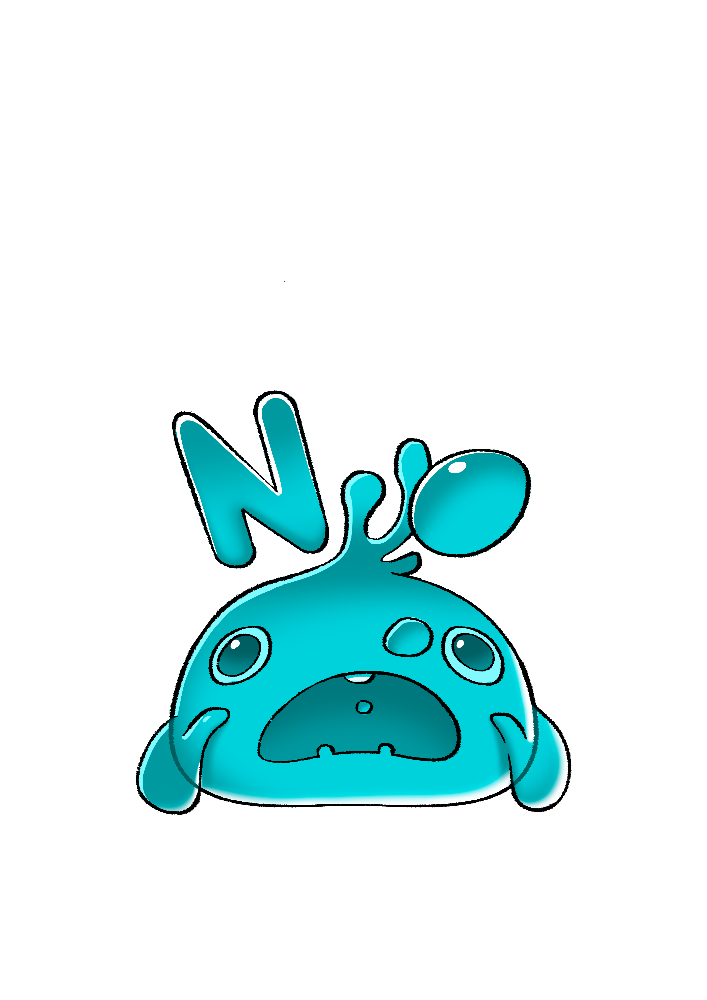
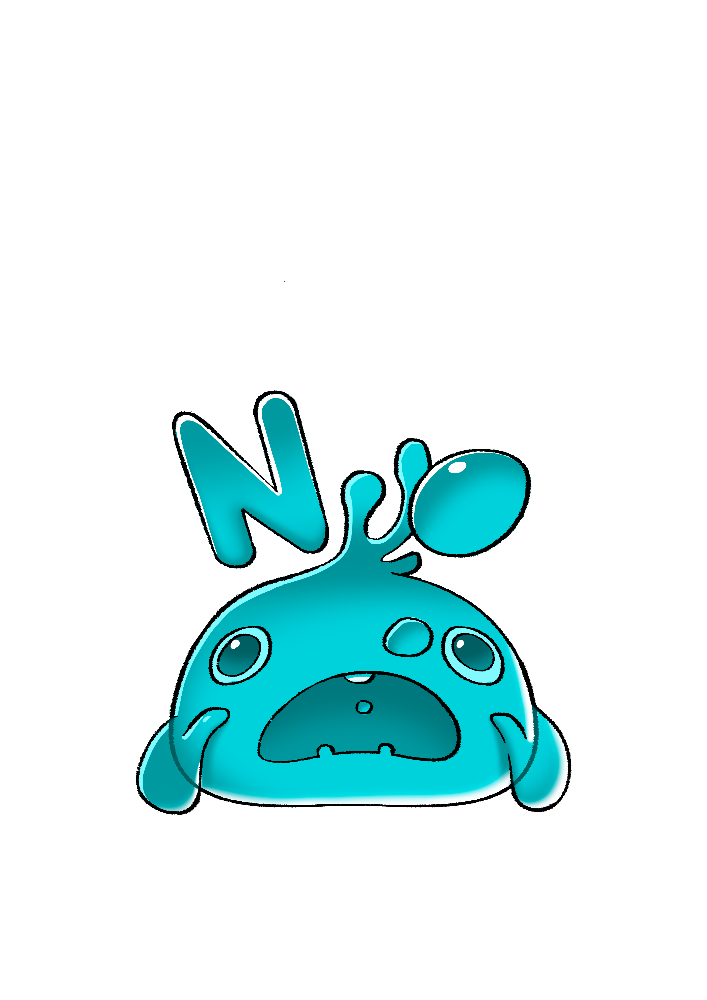
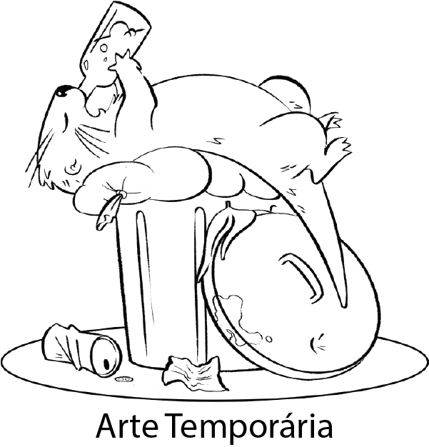
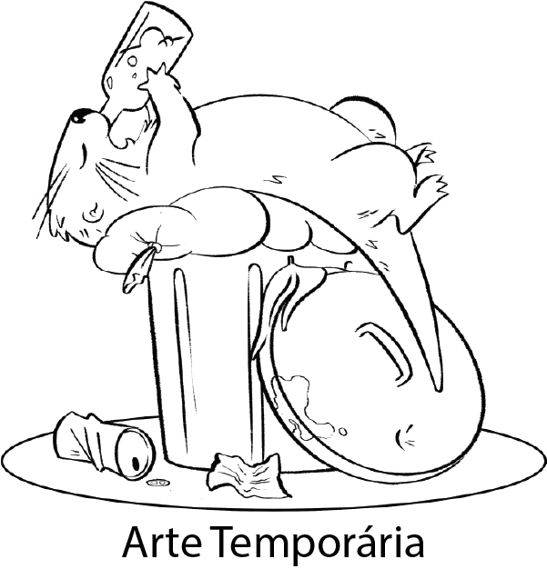

 

 



 

 

Cartas Permanentes ou de Turno que ainda estão como Líder, perdem a ação quando são alvo do Gerente. Caso já estejam na área Permanente, não são afetadas.
Jogadores protegidos pelo Guardião não podem ser escolhidos como alvo.
Caso escolha o jogador que tem o Segurança em seu Campo, a que deve ser puxado no lugar do Líder é o Segurança, já que o Líder faz parte do Campo que está sendo protegido.
Amante é ativada apenas se vier da Mão do alvo.
Duas Caras pode defender do Gerente Avançado.
Caso não tenha Líder, use a última carta do Descarte no lugar.
Caso puxe a Traidora durante a ação do Gerente Avançado, não ative-a, você pode entregar ela ao alvo.
Modo Duo:
Jogando em dupla, você pode usar a ação do Gerente Avançado em sua dupla.